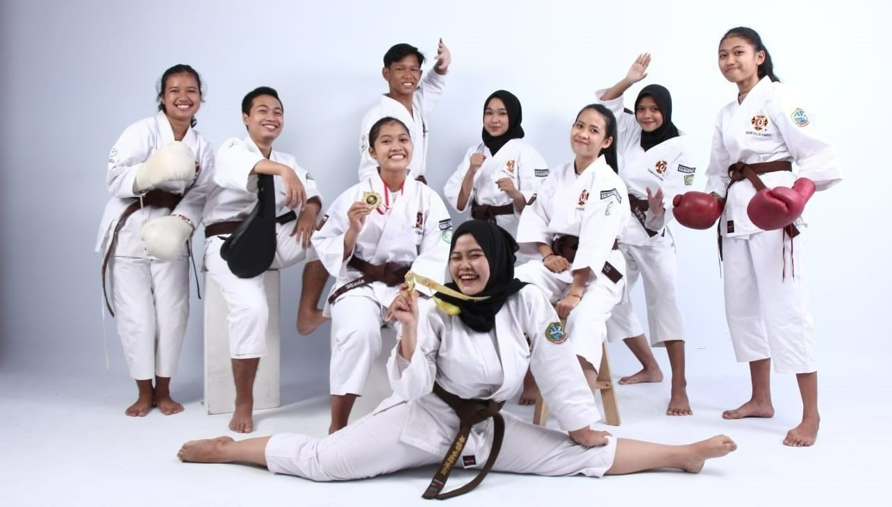

IFT104
Faiza Imania Putri
Hello everyone! My name is Faiza Imania Putri, my friends usually call me Faiza. I am from Indonesia specifically in Pontianak, West Kalimantan. For 18 years I live, I have never moved to another place. That’s why sometimes I feel bored with the environment and the atmosphere here. But in my 19 I be required to go out of my hometown to continue my education, then I realize how meaningful this place was for me. It feels so hard to leave my hometown, the memories, the people, the place that I usually visited. Too many memories that this place gives to me. So with this post. I want to introduce several destinations in my hometown and a bit about myself.
My Favorite Things
Martial Art

I joined martial art
(Shorinji Kempo) since
I was 8 years old.
Shorinji Kempo is an
old martial art from
Japan.
Traveling
I love to go traveling
with my friends and my
family. But recently it
is hard to find the right
time since we have our
own activities.
Hiking
I love to go hiking with
my friends. It helps me
relieve my stress. Even
though it makes you feel tired
because you have to climb
it, but it is worth it!
My Hometown
Blue Lake
It's called Blue Lake because
the watercolor is blue. This
lake used to be a query. But
it has not been used for a
a long time. Then it changes
into this beautiful place.
Cuci Kain Waterfall
The name of this waterfall was
created based on the folklore in
Sekadau Province. The beauty is
so mesmerizing and natural.
There is much variety of flora
growing around the waterfall.
Tanjung Batu Beach
This place is often visited by
the tourists because it is
located near the roadway. There
is also a hill and many big
stones spread in the sand that
you can only see it at a low tide.
Privacy, Security, & Ethics
Technology has its positive and negative depends on the users. But many people disuse technology unwisely and harmful many people. As time goes on, technology has improved significantly and nowadays crime does not just happen in real life but also in digital life that can even be more dangerous than we expect. So that we need to sort what information we should show to the public and what we should just keep in our privacy.
Privacy
Privacy is a person’s right to share or not the information that can be accessed. Which concerns the individual’s right to keep their private information accessed by others that do not have permission to do it. Privacy is divided into physical privacy and information privacy. Physical privacy is a person's right to avoid unwanted people taking their time, space, and proprietary. While information privacy is an individual's right to decide when, how, and what information they want to show to people.
Click here.
Security
Security is an effort to protect the information, hardware, and software from unauthorized use as well as prevent damage from intrusions, sabotage, and natural disaster. For example, network security focus on how to protect the network properties, data organization, network, and capability to use the network to fulfill the function of data organization communication.
Click here.
Ethics
Information technology has a big impact on human life. Because information technology is like a double edge sword, therefore ethic is important to know that not all unethical things are illegal. Furthermore, oftentimes an individual or organization that faced an ethical decision did not consider the laws.
Click here.